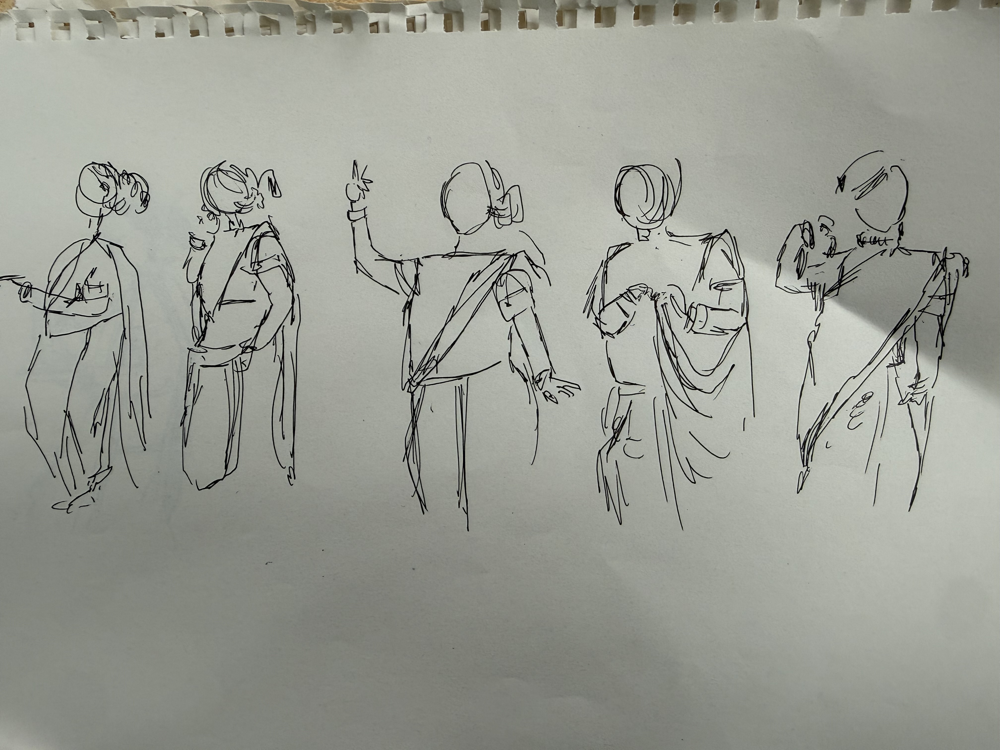
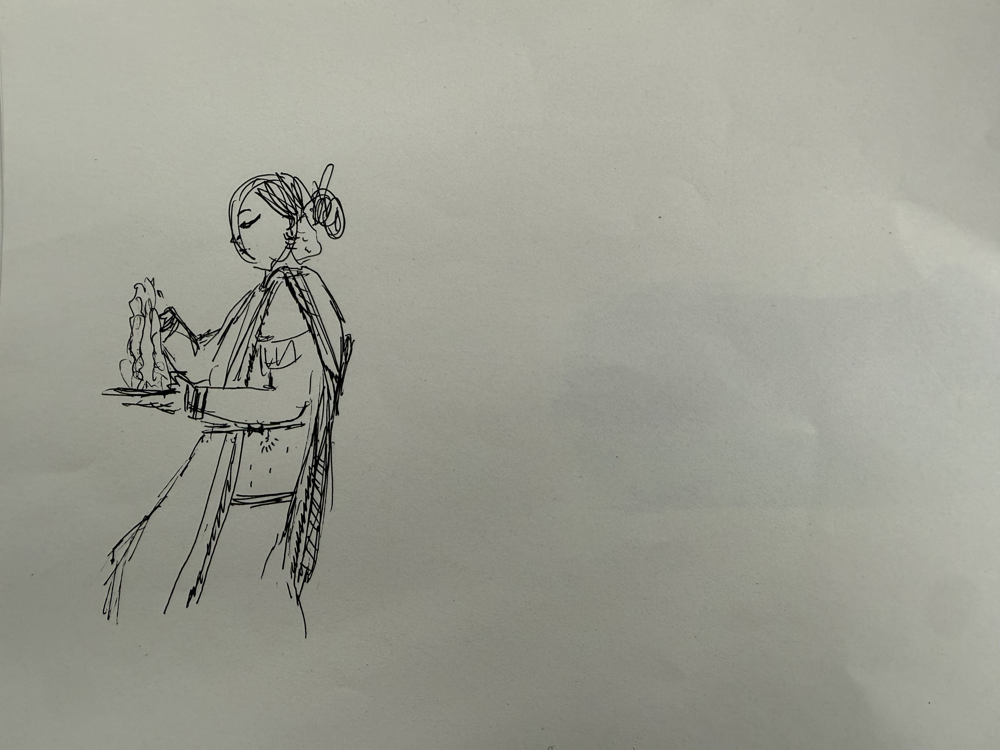
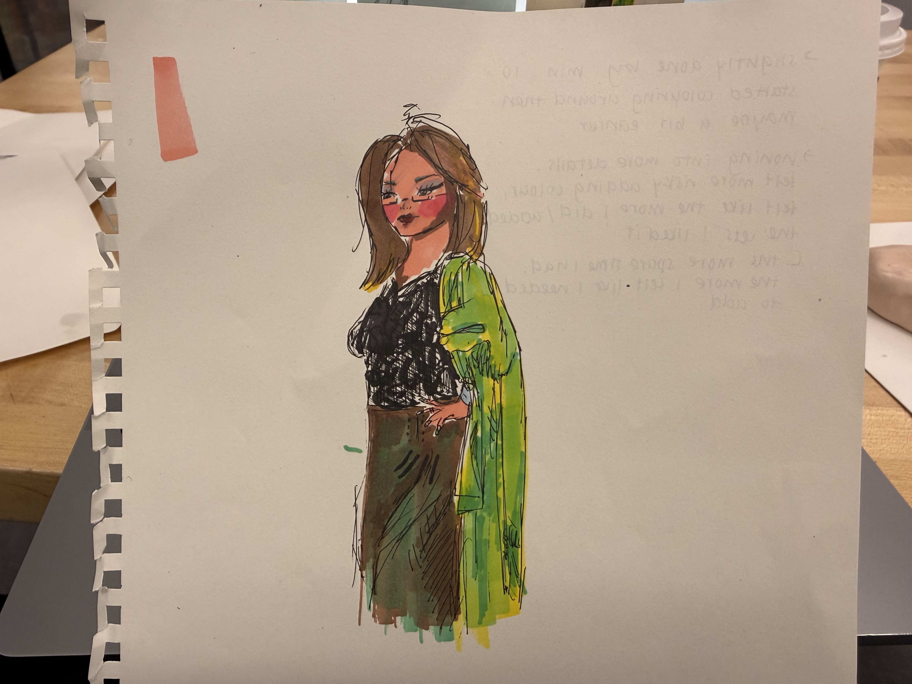
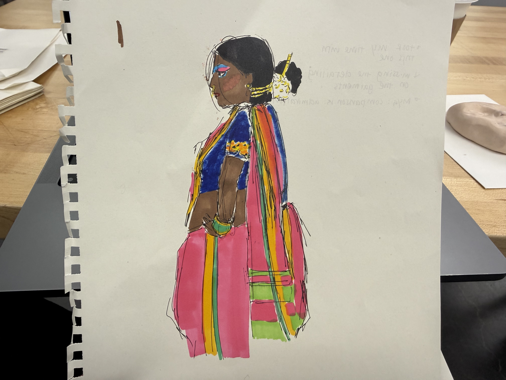
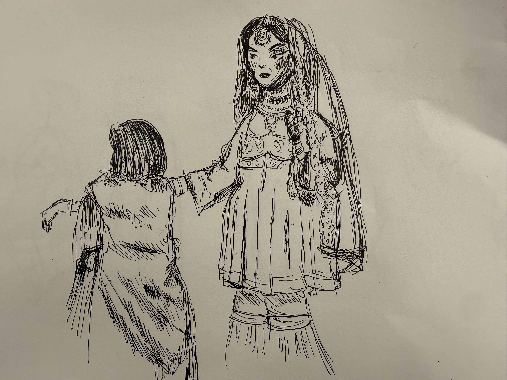
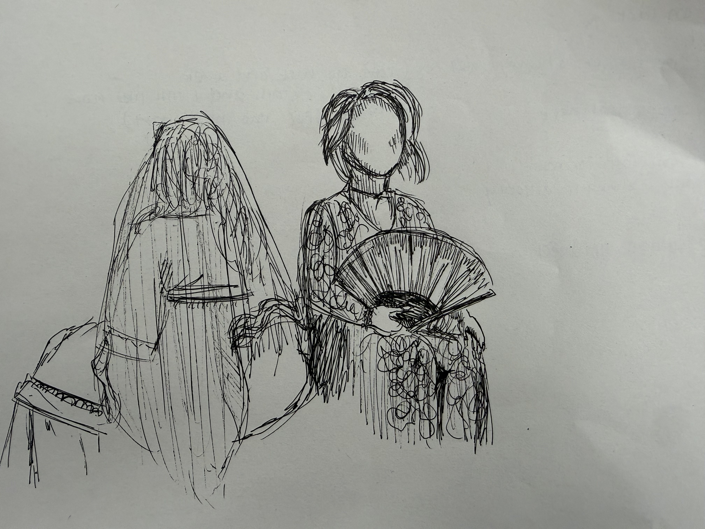

First 20-minute sketch, somewhat felt like I didn't have a proper grasp of time so rushed to do the sketch. Decided to grab my markers and colour everything in. I was mainly done before the 10 minute mark, which is why I started to hyperfixate on fixing small details, but since I'm not that comfortable with colour, adding colour felt riskier. Kind of felt like the more I added, the less I liked it, yet the more spare time I had, the more I felt like I needed to keep adding things.

As this was the second 20-minute sketch, I took my time with this one. I did feel like because I was using coloured markers and doing both the sketch + colouring, I didn't capture a lot of the details I then noticed in other people's sketches during break. Mya made an interesting comment about comparison vs. admiration. I thought everyone was doing so beautifully I almost started to compare myself, but stopped to just observe with admiration.


Switched to only pen for the last two sketches to capture more detail; I realized it lets me be messier too, I can go back and refine details while still liking how it looks(for the most part). Faces are always the trickiest for me and sometimes it makes me not like a sketch, so I kept it faceless this sketch. Also I should have grabbed a closer view